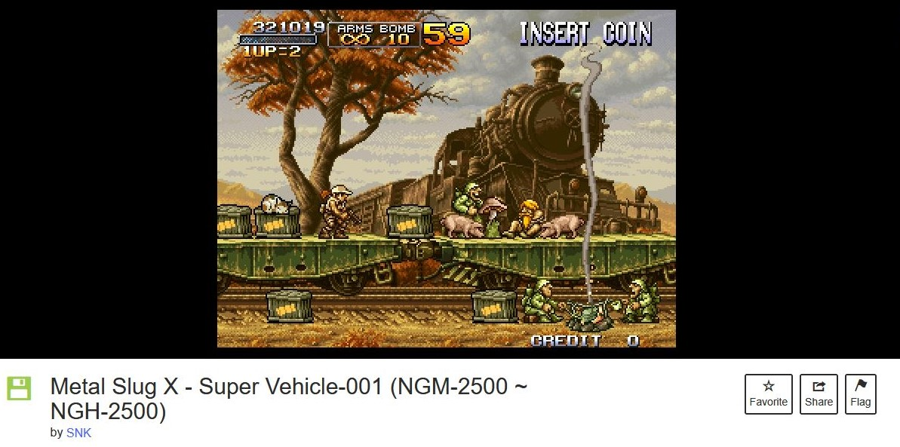

LIAM ESLER'S GAME STUDIES BLOG!
--------------------------------------------------------------------------------------
Blog Post 1: Internet Arcade
Adopt a classic arcade game from https://archive.org/details/internetarcade Links to an external site.
the Internet Arcade and play it in a browser.
1) Write about your experience playing, what happened during play?
2) How is it different playing on an emulator vs playing the game on the original hardware or an arcade cabinet?
You can talk about browser emulation or anything that you think might be different..
Out of all the listed games to choose from, I chose to play Metal slug.
It caught my eye because I had seen it previously when the game collaberated with another game I like called 'battle cats'.
It was difficult to learn what each button did, it took me about 10 minutes just to understand how to start the game.
This is beacuase the person who posted the game decided not to list the controls. There was a comment section on the post which I thought might help, but the only info
it gave was that the 'ctrl' key was how to shoot.
So I learned the controls the only way I could, which was pressing all the buttons on my keyboard until I knew what each one did.
I kept accidentally starting the game in 2 player mode which was annoying. but then found that if I only added 1 credit I could start in single player.
I have a lot of experience playing video games, so the controls were not to difficult to learn, and I felt that they were not badly assigned.
If I had the option to customize the keybinds I would have preffered to use 'WASD' movement, and have the jump button binded to 'SPACEBAR'.
The nice thing about emulators is that they give you unlimited credits. so I could die in the game as many times as I wanted and still continue.
However the downside to playing this way, is that with a keyboard I was limited to up, down, left and right aiming controls.
This was a real bother because many of the enemys in Metal Slug will be at a spefic angle that you need to aim towards in order to hit them.
With a joystick in an arcade cabinet I would have been able to precicly aim and hit the enemys.
I think if I had the joystick I would'nt have died as nearly as many times as I did.

Note:
This site is just simply html as of now, I will add css when I find the time.
With each new blog post assignemnt this site will look prettier each time :)
--------------------------------------------------------------------------------------